Phil/Japan 2026
Honestly, didn't really take a lot of photos in the Philippines. Most of them are of family and I would rather not share them on here. That being said, I have a ton of photos in Japan and I might have to end up sectioning it off in its own page here because it's a lot. I also went to Taiwan in this trip for a transit tour while we were waiting for our plane which was cool. As of me writing this, I just came back from this trip so expect some updates and what not as I get more photos.
Back home for the 7th time!
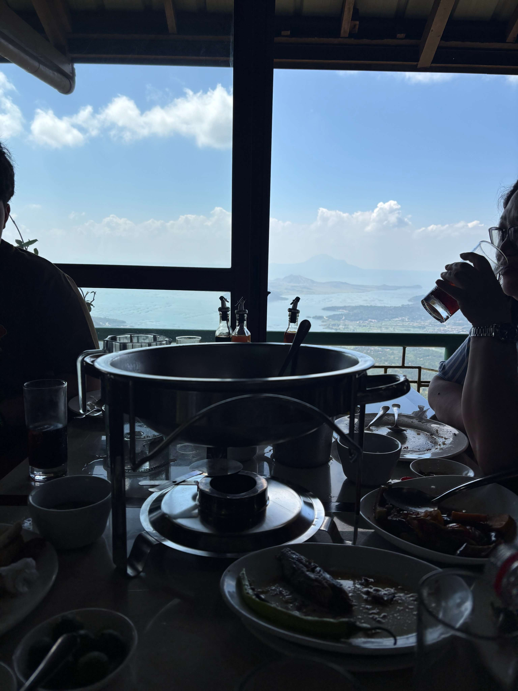
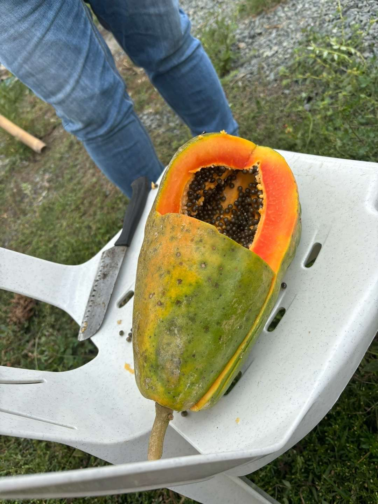
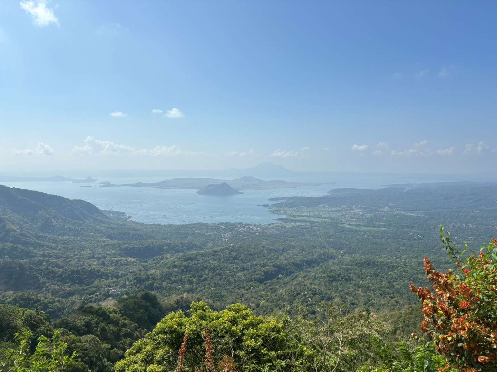
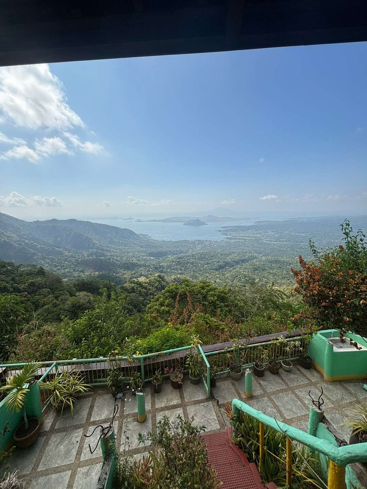
These photos are actually from an earlier trip this year in April. Unfortunately, my grandfather had passed away this year and my dad and I went back home as soon as we heard news. Despite the sad circumstances, we were able to visit my grandpa's plot of land in Tagaytay and got these amazing views of Taal Lake and Taal volcano. These two views were from a restaurant we had lunch at. The dinuguan was mid but the views were great! The papaya was picked off from my grandpa's land. I wish I had a photo of the trees as due to volcanic soil in the area the trees had a ton of papaya fruits growing! Beautiful part of the country that I haven't been to in a long while.
..aaaand back for the 8th time!
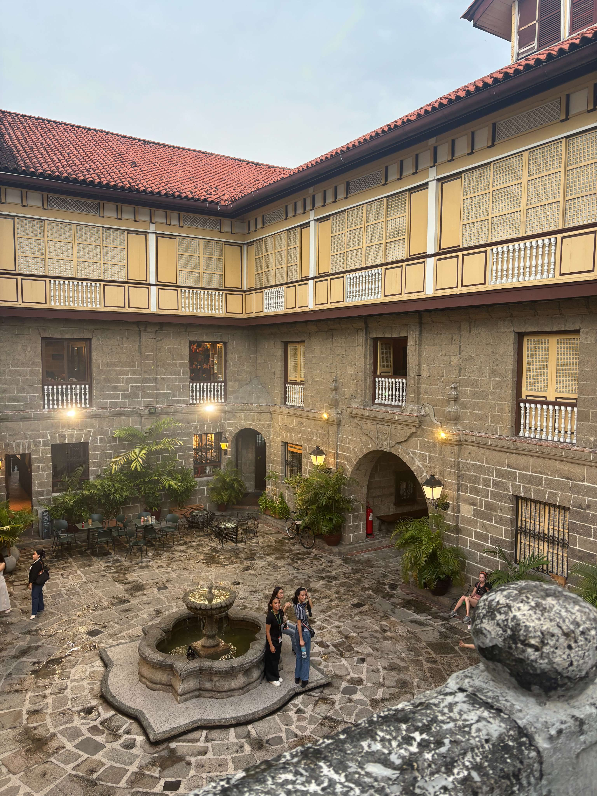

Because of our schedule, we didn't really get to see much back home. With the Japan trip sandwiched in the middle of our time here in the Philippines, we only stayed around Manila mostly. We did visit Intramuros and I got some great photos of the San Agustin Museum which can be found here!
We went to Intramuros back in 2023 and went into Fort Santiago which was cool. It rained a crap ton then so it was a little hard to go sight-seeing; it also rained this time but thankfully not as much. After visiting San Agustin, we walked around Intramuros for a bit. We stopped by the Cinematheque Centre right before it closed just to see it. They do showings of Filipino films for free! If we had more time I would have loved to have watched one of their showings! Then we relaxed by Manila Cathedral which had a line of food and souvenir vendors as well as some musicians playing OPM. It was night time at this point but the place was still busy with people lined up getting food. Still, the ambience was mellow and a cool breeze was blowing through the air. Just a cool time 😎.
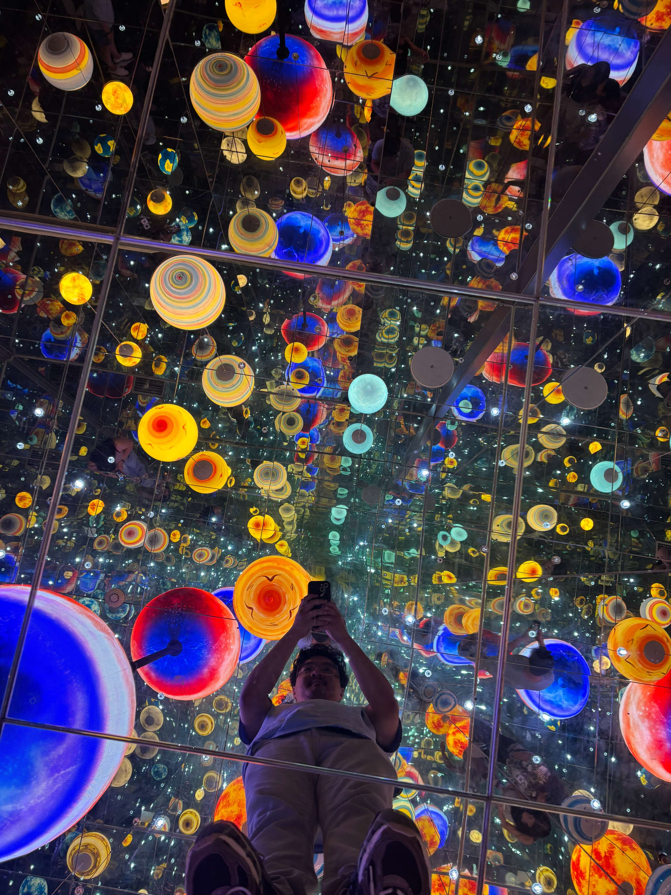
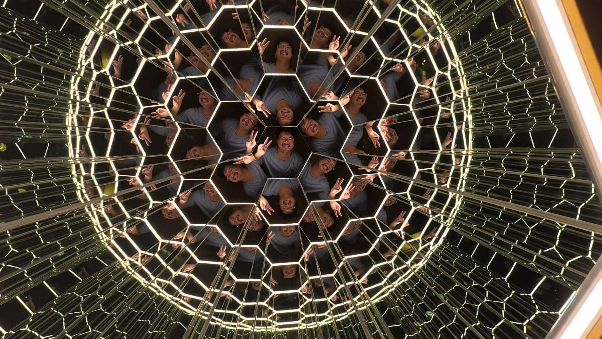
These pictures were taken at SM North Edsa right before we left for the U.S. There was an event space that featured a bunch of different activities such as a ball pit, mirror maze, and a bunch of different photo-ops. They even had one of those 4D movie carts that shake and move while watching a movie.
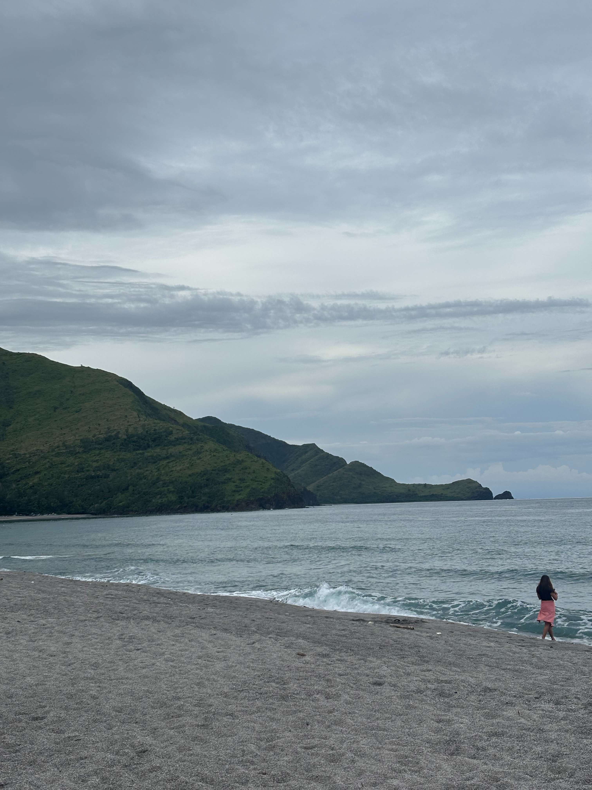
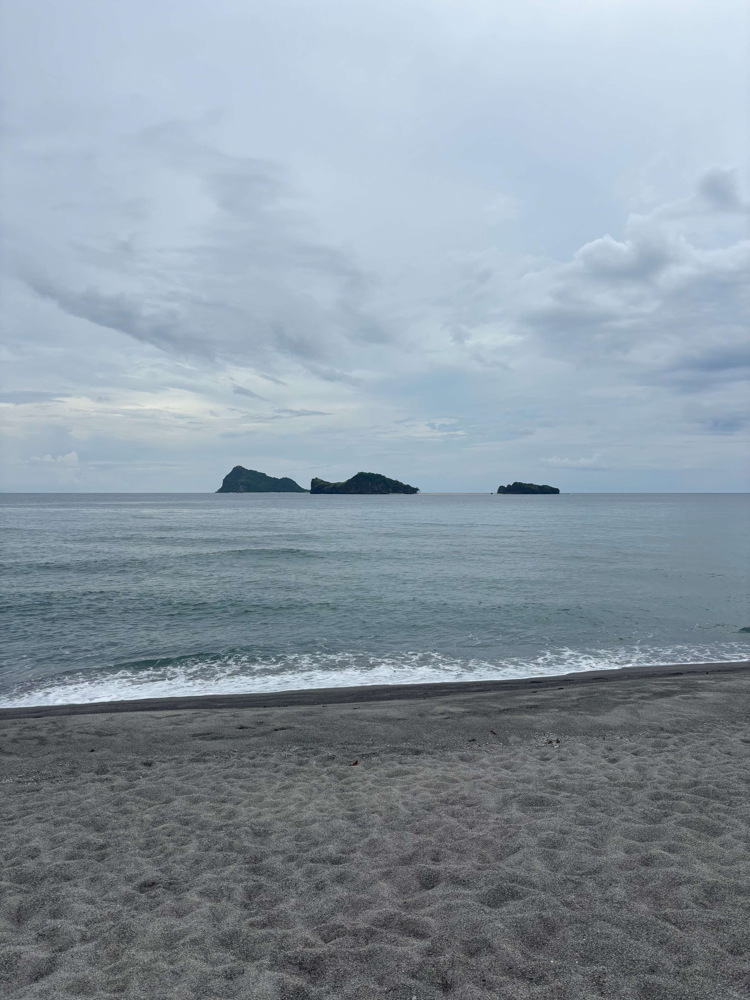
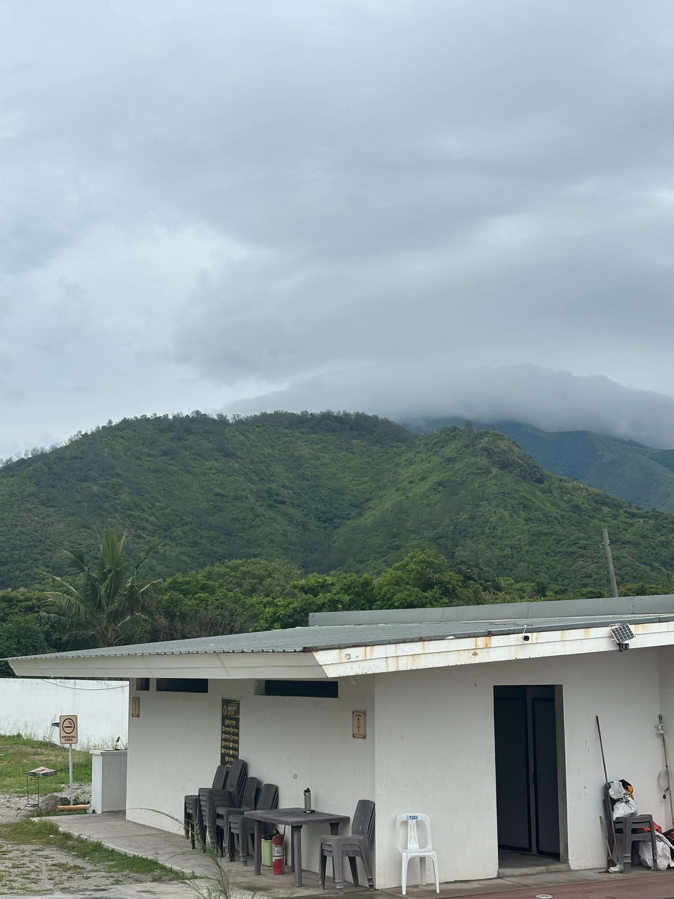
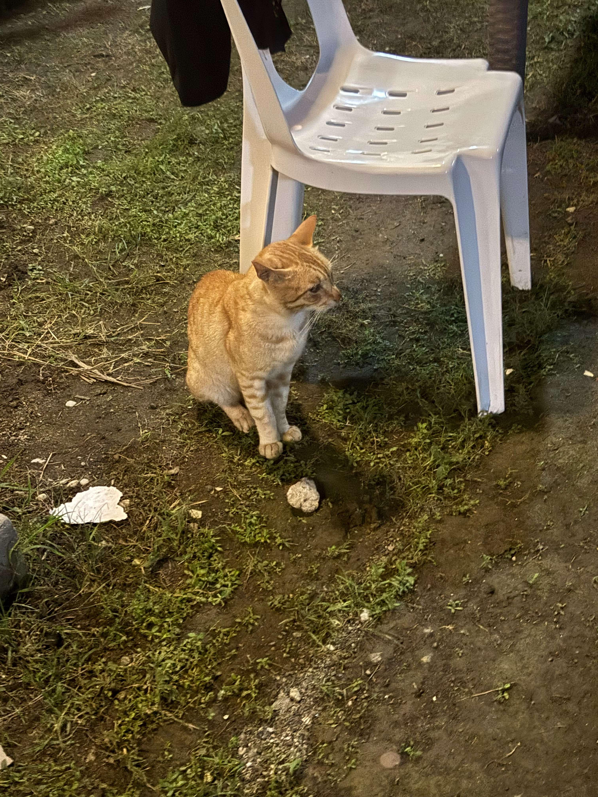
Some pics from Zambales, our family rented out a resort for both sides of our family which ended up being around 50-60ish people! Definitely not cheap so we only rented the place out for one night but it was still a great time! The waves were pretty high and rough due to the storm so we were only able to swim in the water for a little while. The weather was mild because of the rain and the sea breeze was refreshing. Because almost everyone in family came with, we had a large dinner that night; the food was amazing, we had kareoke, and the vibes were incredible. I wish we had stayed longer.
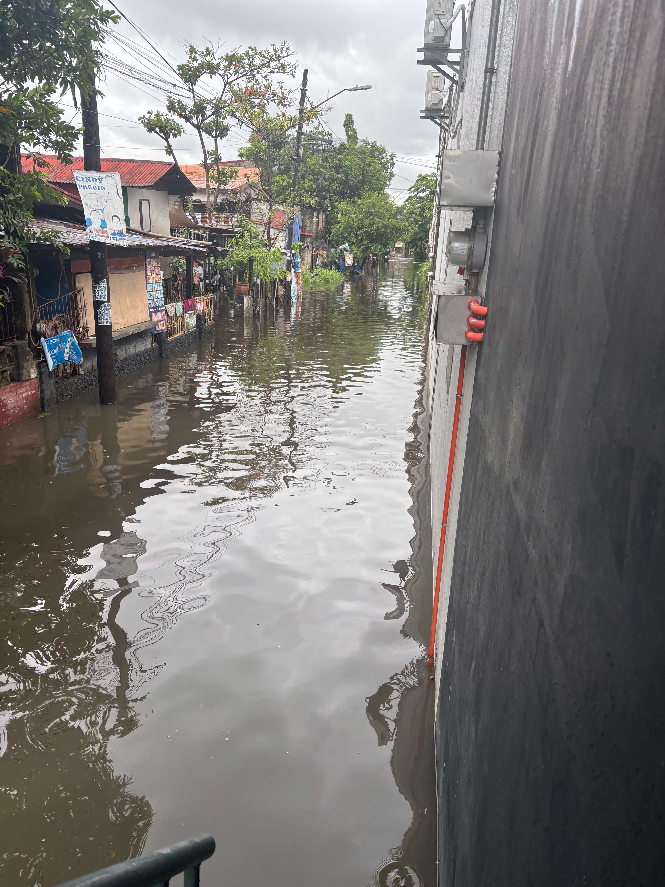
Finally, a picture of the flooding happening near our house in Meycauayan. Unfortunately, the flooding caused us to stay at home for a couple of days.